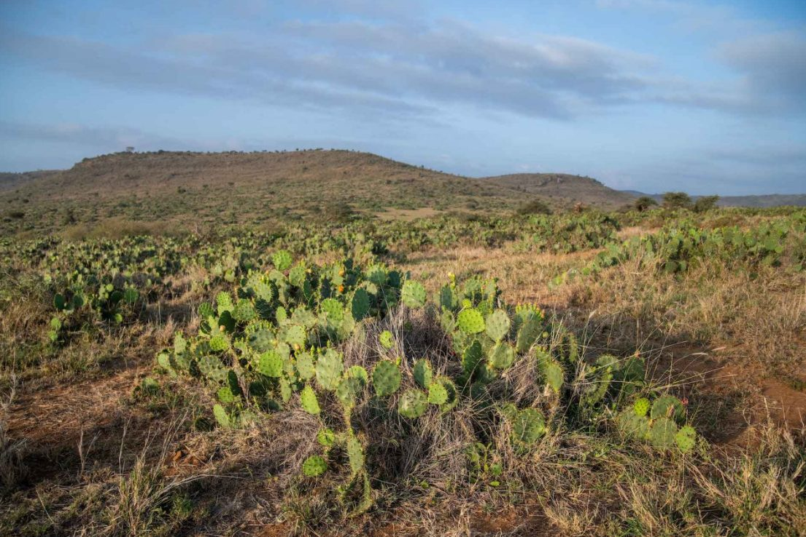
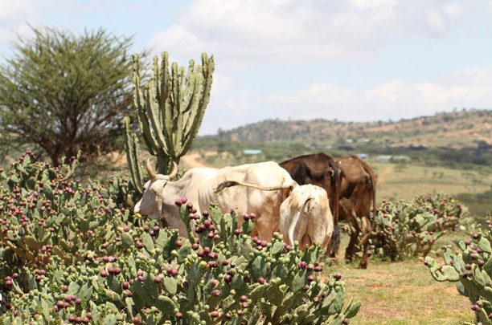
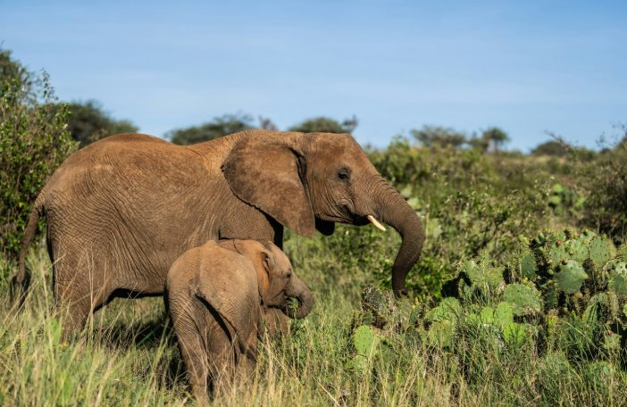
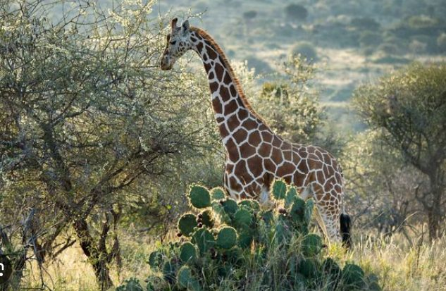
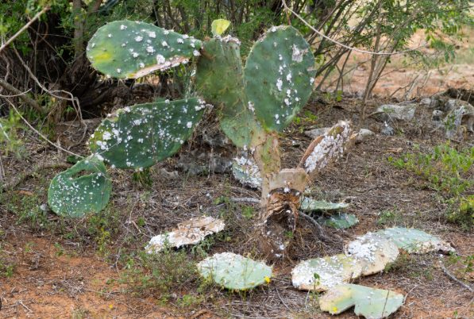
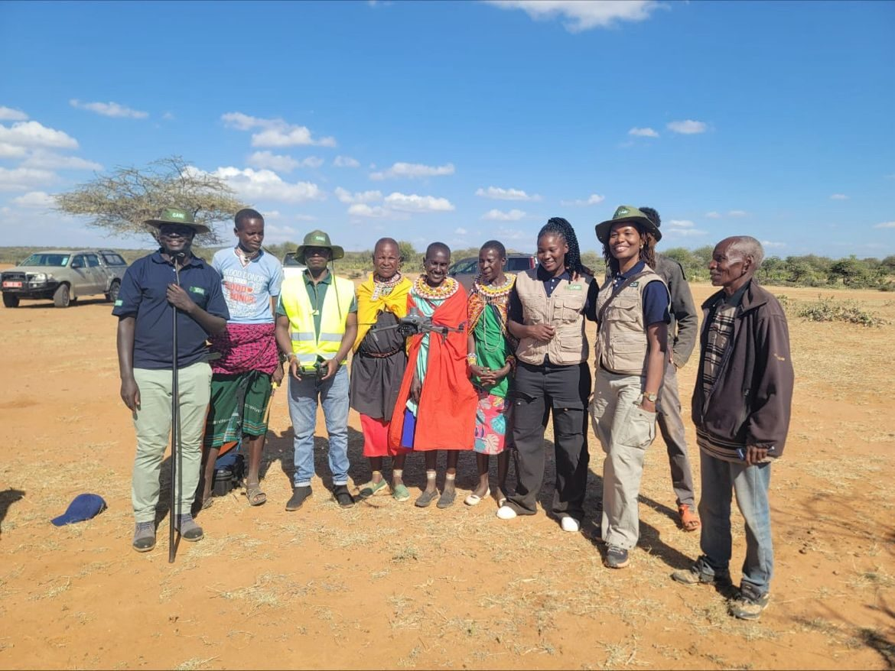
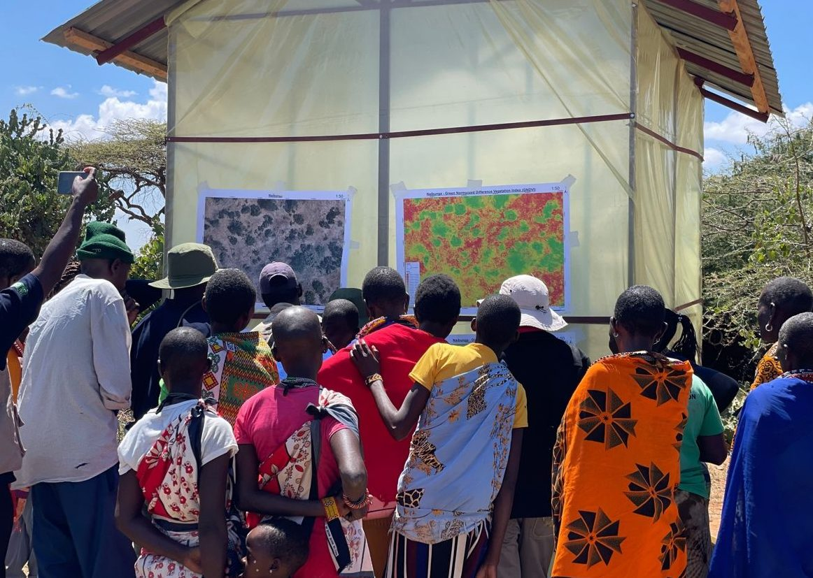
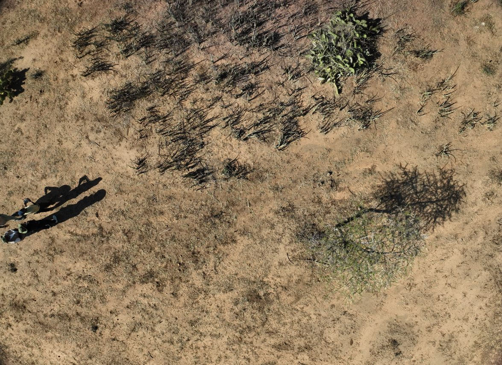
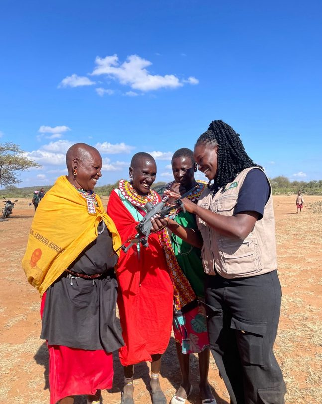

Grasslands are among the world's most extensive and ecologically important ecosystems, playing a vital role in supporting livelihoods and biodiversity, conserving soils, regulating water cycles, storing vast amounts of carbon below ground, and offering opportunities for tourism and recreation. However, many of these ecosystems are increasingly under pressure from climate change, land degradation, changing land-use practices, habitat fragmentation, and the spread of invasive species, all of which reduce the ability of grasslands to provide these critical ecosystem services.
In Kenya, grasslands support millions of people through pastoralism while providing habitat for some of Africa's most iconic wildlife. These landscapes, however, are increasingly facing the combined pressures of recurrent droughts, overgrazing, land-use change, and the spread of invasive plant species that alter ecosystem function and reduce the productivity of native grasslands. In Laikipia County, Kenya, one such invasive species, Opuntia engelmannii, a prickly pear cactus native to southwestern USA and northern Mexico, has become a growing ecological challenge, spreading across grazing lands and reducing the availability of pasture for both livestock and wildlife.

Loisaba and Naibunga Community Conservancies, Laikipia County — the landscape at the centre of this project.

Part of Naibunga Community Conservancy, where healthy grasslands are increasingly threatened by invasive Opuntia cactus.
For the pastoralist community in Naibunga and Loisaba Conservancies in Laikipia, the spread of Opuntia cactus is more than an ecological concern, it is a daily challenge. Community members described how stands of the cactus have progressively encroached on productive grazing areas, restricting livestock movement, injuring animals with their sharp spines, and, in some cases, causing livestock deaths after the animals consumed its fruits or pads.
Beyond its direct impacts on livestock, the spread of Opuntia has altered the structure and function of the ecosystem. As native vegetation gets displaced, biodiversity declines, ecosystem processes get disrupted, and the resilience of the rangeland to drought and other climate-related pressures seemingly reduces. For communities and wildlife whose survival is dependent on healthy grasslands, the degradation caused by the invasive Opuntia represents both an environmental, conservation, and socioeconomic challenge.

Cattle seen to be feeding on Opuntia cactus fruits and pads.


Wildlife, People and Livestock sharing the same space increasingly encroached on by Opuntia.
A Biological Response
Recognizing this challenge, the Centre for Agriculture and Bioscience International (CABI), with support from The Nature Conservancy (TNC) and in collaboration with the local community, implemented a biological control programme using Dactylopius opuntiae (cochineal insects). Community members explained how manual removal had become unsustainable and labour-intensive. They described how the cactus continues to spread with or without rain, with detached pads and fruits developing roots wherever they land, some even recounted seeing the cactus growing on top of trees, where it had become lodged. The biological control by CABI offered a sustainable, long-term approach to the problem.
Following successful use in South Africa, the cochineal insects were introduced into affected areas of Laikipia, where they have since been mass-reared and deployed to suppress the spread of the cactus. The initiative combines scientific research with community participation, allowing the community to take an active role in restoring their lands.
Community members collecting pads of Opuntia cactus that will be used to mass rear cochineal insects.

Cochineal insects feed exclusively on Opuntia, gradually weakening the cactus.
Mapping the Invasion from Above
Alongside biological control, drones played an important role in supporting the restoration efforts. Using the DJI Mavic 3 Multispectral, we conducted aerial surveys to map the extent of Opuntia invasion and establish a baseline for monitoring over time. The high-resolution imagery provided valuable spatial information on the distribution of the invasive cactus, helping project partners assess affected areas and track the effectiveness of the biological control interventions.

The field team with community members in Naibunga during a mapping and monitoring field visit.

Community members viewing a vegetation index map derived from drone imagery, showing the spread of Opuntia cactus.

An RGB drone showing individual Opuntia stands and surrounding vegetation.

Personal Reflection
Being part of this project reminded me that restoration is about restoring the balance of an ecosystem so that native vegetation, wildlife, livestock, and people can thrive together . Healthy grasslands/rangelands not only provide food and habitat but also protect soils, store carbon. As climate change and other pressures continue to reshape our landscapes, protecting and restoring ecosystems like these reminds us that nature's resilience is also our own and one of our strongest allies in our fight against climate change.
Read the original write up by CABI here:
Drones, insects and local community tackle Kenya's thorny problem